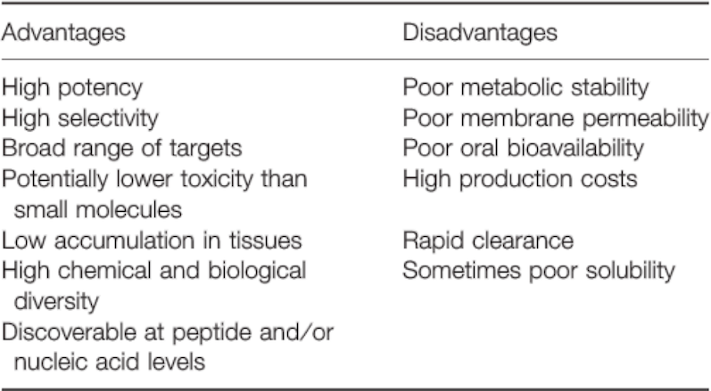

Purpose
As described in Overview - HuR introduction, HuR plays a significant role in post-transcriptional regulation, and thereby further affects the development of inflammation and cancer. For example, the HuRs in fibroblasts, T cells and macrophages are able to stabilize the mRNAs of proinflammatory cytokines, TNF-α and IL-6, which in turn contribute to inflammation [1-5]; HuR also regulates the expression of COX2 in macrophages and glomerular cells, and affects the development of breast cancer, ovarian cancer, and colorectal cancer and other cancer cells. Furthermore, in rheumatoid arthritis, HuR promotes high expression of TNF-α [6-8].
Macrophage-Targeted Therapy
Since macrophages play a pivotal role in these diverse regulatory and response pathways, we decided to focus on the regulation of inflammatory responses by macrophages. Macrophage-induced inflammatory mediators are crucial to a variety of human inflammatory diseases, such as multiple organ dysfunction caused by sepsis, microbial infection, acute brain / lung / liver / kidney inflammation, rheumatoid arthritis, inflammatory bowel disease, asthma, atherosclerosis, fibrosis and cancer [9-17]. When cytokines, chemotactic hormones and inflammatory mediators secreted by macrophage cause imbalance in the body, these diseases could arise[18, 19]. In other words, macrophages can not only protect the body against pathogens invasion but also inflict damage on tissues and organs due to excessive secretion of inflammatory substances.
We therefore conceived that, if anti-inflammatory polypeptide could be carried by nanocarrier materials and then be engulfed by macrophages, the secretion of inflammatory substances may be inhibited, and blocking effect can be achieved.
Peptide Drugs
Peptides, consisting of amino acids, are involved in a variety of physiological and pathological processes and play very important roles in modulating various cell functions.
Previous peptide drugs can form a polymer according to a specific sequence, and can function as drugs. For example, Glatiramer acetate (a synthetic polypeptide, Copaxone) is composed of four kinds of amino acids, and is a drug to treat multiple sclerosis. There are an awful lot of advantages of previous peptide drugs, such as high potency, high selectivity, low toxicity, etc. Nevertheless, disadvantages like poor metabolic stability and poor membrane permeability have also been observed (See Table D-1).
Table. D-1. The advantages and disadvantages of peptide as drugs. 
Reference: Chem Biol Drug Des 2013; 81: 136–147.
In order to design a peptide drug that not only possesses the advantages mentioned above, but could also overcome some of the disadvantages, we decided to modify the structure of peptide and see how it’d turn out.
Ultimately, our peptide drug--"JS1", successfully overcomes some of the disadvantages including poor metabolic stability, poor membrane permeability, and poor solubility.
Reference:
- Nabors, L. B.; Gillespie, G. Y.; Harkins, L.; King, P. H. Cancer Research 2001, 61, (5), 2154-2161.
- Dixon, D. A.; Tolley, N. D.; King, P. H.; Nabors, L. B.; McIntyre, T. M.; Zimmerman, G. A.; Prescott, S. M. J Clin Invest 2001, 108, (11), 1657-1665.
- Sung, S. C.; Kim, K.; Lee, K. A.; Choi, K. H.; Kim, S. M.; Son, Y. H.; Moon, Y. S.; Eo, S. K.; Rhim, B. Y. J Vasc Res 2009, 46, (1), 36-44. Wang, J. G.; Collinge, M.; Ramgolam, V.; Ayalon, O.; Fan, X. H. C.; Pardi, R.; Bender, J. R. Journal of Immunology 2006, 176, (4), 2105-2113.
- Zhou, H.; Jarujaron, S.; Gurley, E. C.; Chen, L.; Ding, H.; Studer, E.; Pandak, W. M., Jr.; Hu, W.; Zou,
- T.; Wang, J. Y.; Hylemon, P. B. Atherosclerosis 2007, 195, (1), e134-43.
- Dixon, D. A.; Tolley, N. D.; King, P. H.; Nabors, L. B.; McIntyre, T. M.; Zimmerman, G. A.; Prescott, S. M. J Clin Invest 2001, 108, (11), 1657-65.
- Sengupta, S.; Jang, B. C.; Wu, M. T.; Paik, J. H.; Furneaux, H.; Hla, T. J Biol Chem 2003, 278, (27), 25227-33.
- Cok, S.J.; Acton, S. J.; Morrison, A.R. Journal of Biological Chemistry 2003, 278, (38), 36157-36162.
- Murray, P. J.; Wynn, T. A. Nature reviews. Immunology 2011, 11, (11), 723-37.
- Ma, Y.; Pope, R. M. Curr Pharm Des 2005, 11, (5), 569-80.
- Kamada, N.; Hisamatsu, T.; Okamoto, S.;Chinen, H.; Kobayashi, T.; Sato, T.; Sakuraba, A.; Kitazume, M. T.; Sugita, A.; Koganei, K.; Akagawa, K. S.; Hibi, T. J Clin Invest 2008, 118, (6), 2269-80.
- Hansson, G. K.; Hermansson, A. Nat Immunol 2011, 12, (3), 204-12.
- Bang, B. R.; Chun, E.; Shim, E. J.; Lee, H. S.; Lee, S. Y.; Cho, S. H.; Min, K. U.; Kim, Y. Y.; Park, H. W. Exp Mol Med 2011, 43, (5), 275-80.
- Wynn, T. A.; Barron, L. Semin Liver Dis 2010, 30, (3), 245-57.
- Schulte, W.; Bernhagen, J.; Bucala, R. Mediators Inflamm 2013, 2013, 165974.
- Sun, Q. L.; Ran, W. World J Gastroenterol 2004, 10, (12), 1709-15.
- Pollard, J. W. Nat Rev Cancer 2004, 4, (1), 71-8.
- Mosser, D. M.; Edwards, J. P. Nature reviews. Immunology 2008, 8, (12), 958-69.
- Duque, G. A.; Descoteaux, A. Front Immunol 2014, 5, 1-12.